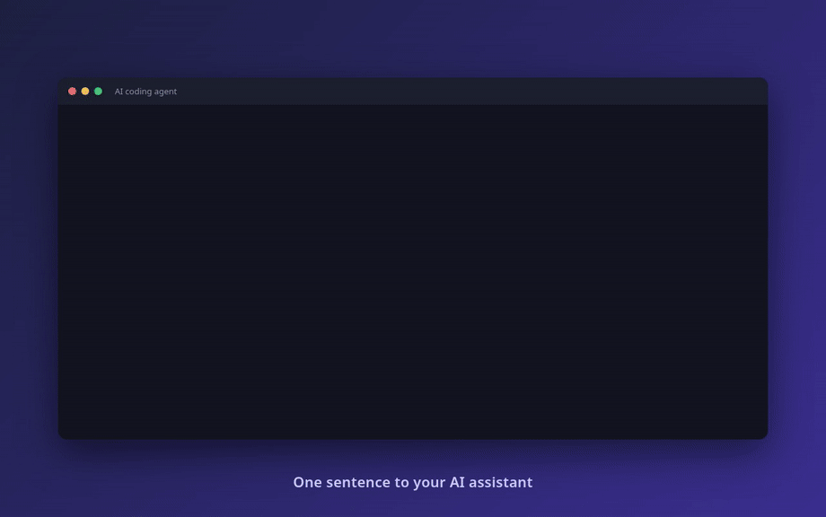

Easy UI Canvas
本地多画板 UI 探索工具：在元素上写评论，AI 编程 agent 读取评论、修改文件并回复。
A local multi-frame canvas: comment on an element, and an AI coding agent reads it, edits the files, and replies.

本地多画板 UI 探索工具：在元素上写评论，AI 编程 agent 读取评论、修改文件并回复。
A local multi-frame canvas: comment on an element, and an AI coding agent reads it, edits the files, and replies.
